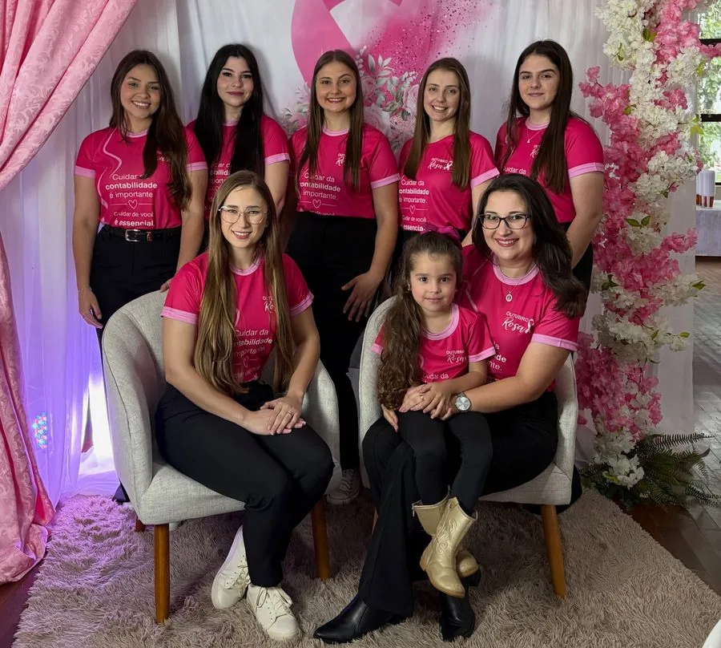
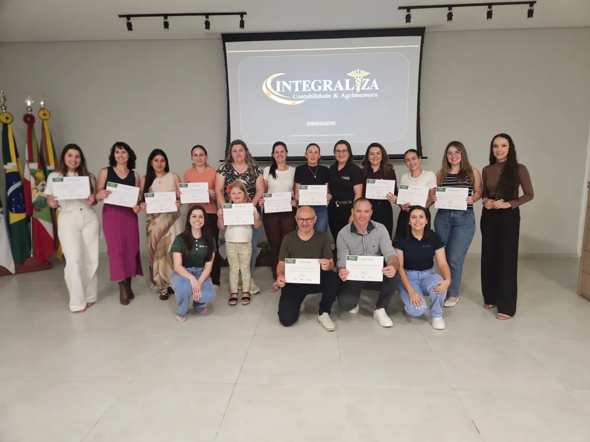
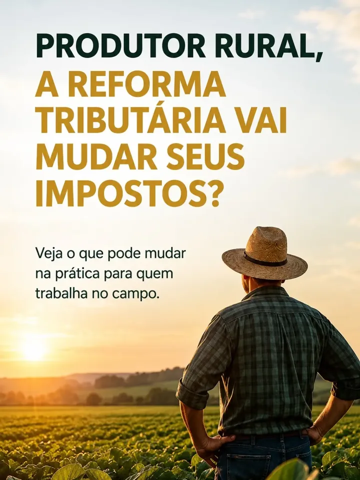
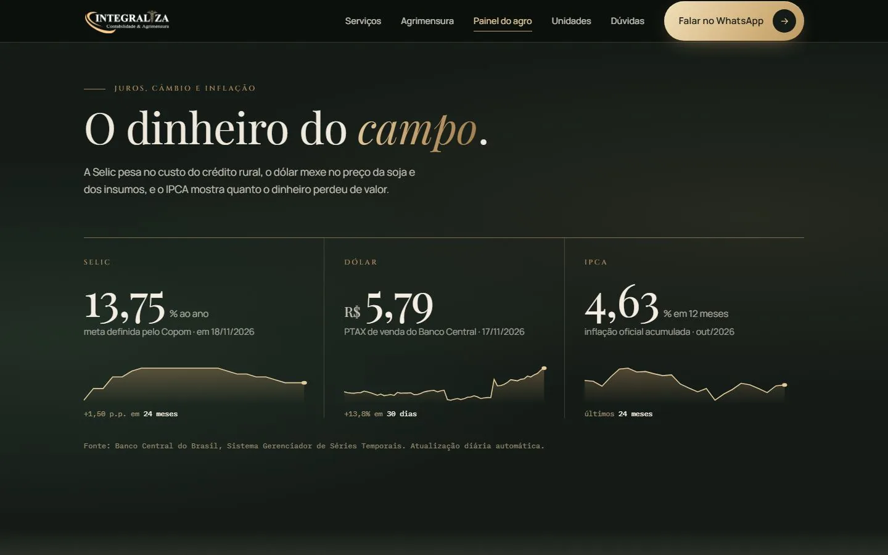
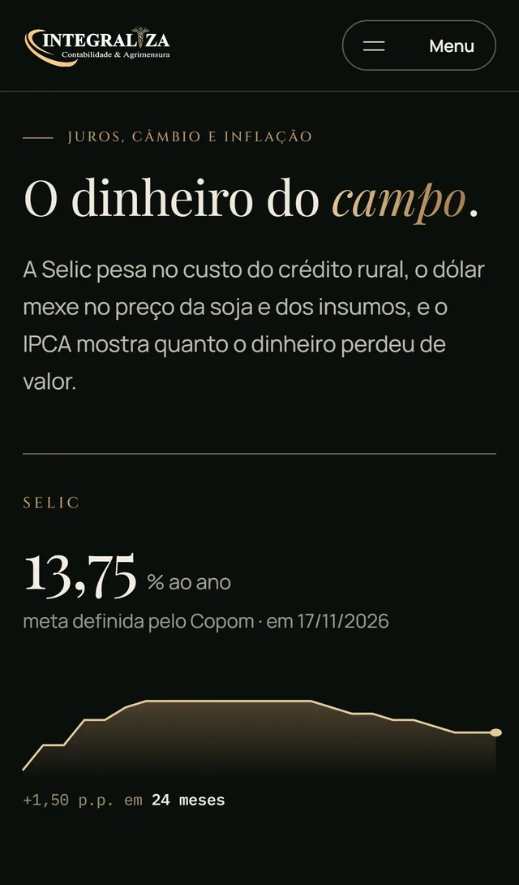
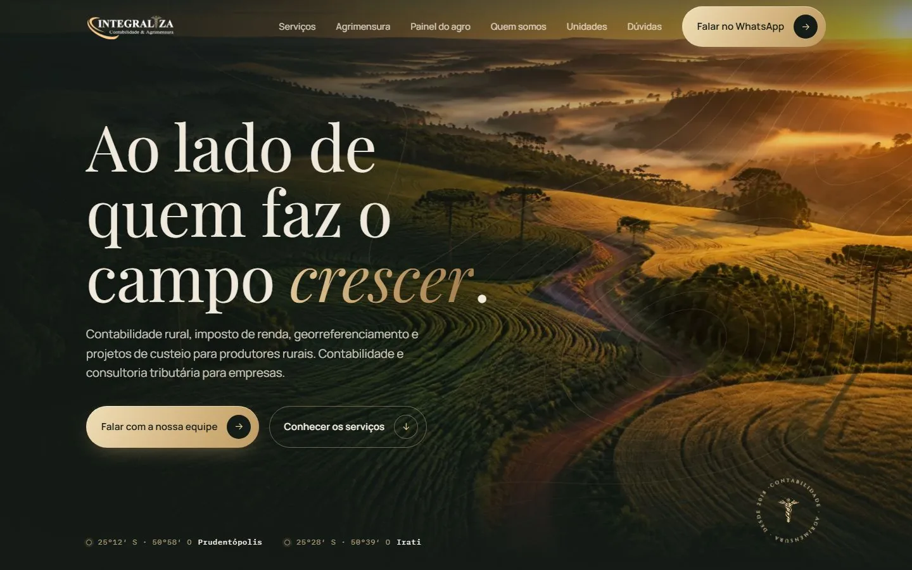
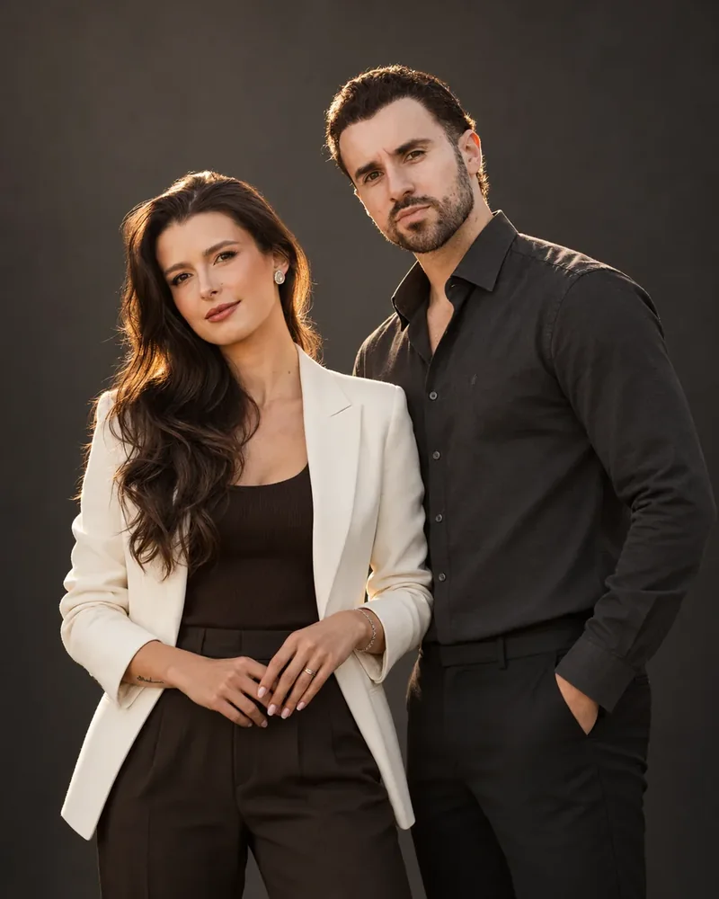

Levar a Integraliza para fora.
Em 2026 vocês arrumaram a casa. Agora é hora de o produtor da região saber tudo o que o escritório faz.


Foi isto que ouvimos.
- 1
Levar dados de Selic, taxa de dólar, preço de commodities, previsão do tempo.
O Painel do agro - 2
Ir para campo, em leiteria, suinocultura, fumo, atividade de grãos nas lavouras.
Os vídeos a campo - 3
Fechar um pacote para vocês cuidarem das nossas redes sociais.
Instagram e Facebook - 4
Muita gente não sabe de tudo o que a gente oferece.
O site e o Google
Cada frase virou uma parte desta proposta.
Uma referência no agro que o digital ainda não mostra.
- 0
avaliações no Google
A ficha ativa está como "Escritório da empresa", sem telefone nem site.
- Irati
não existe no Maps
Quem procura contador em Irati não encontra a unidade nova.
- 10×
mais curtidas com gente real
Os posts com a equipe e os eventos rendem dez vezes mais que as artes técnicas.
- 9 mil
estabelecimentos rurais
Só nas duas cidades. Soja, fumo, feijão, leite e suínos são as maiores atividades.
- set
de 2026
Desde setembro, um escritório da cidade posicionado no agro anuncia na Meta.
Google, Instagram e biblioteca de anúncios da Meta, conferidos de novo em 17/11/2026. Estabelecimentos: IBGE, Censo Agropecuário 2017.
2027 é ano de decisão no campo.
A exigência de CNPJ para parte dos produtores e a reforma tributária vão fazer o produtor procurar um contador do agro. Vocês já falam disso: foi o post de 05/11.
Prudentópolis e Irati somadas. IBGE: Censo Agropecuário 2017, Produção Agrícola Municipal 2024 e Pesquisa da Pecuária Municipal 2024.

O Painel do agro já existe.
Fizemos antes da reunião, para vocês verem funcionando. Ele busca os números sozinho, todo dia, sem ninguém da equipe mexer.


Um mês para estruturar. No segundo, tudo rodando.
A base pronta
- O site completo no domínio de vocês, com o painel e as notícias
- As fichas do Google arrumadas, a de Irati criada e a rotina de avaliações
- A medição ligada: Search Console, Pixel da Meta e cliques no WhatsApp
- A identidade de edição dos vídeos e a bio dentro das regras do CFC
- A primeira diária a campo e as primeiras publicações no ar
Tudo rodando
- As 20 publicações do mês, com o calendário do agro
- Uma diária a campo por mês, com o conteúdo do mês inteiro
- O site trabalhando sozinho: painel e notícias atualizados todo dia
- No plano com tráfego, os anúncios usando os dados do mês 1
- O relatório e a reunião mostrando o que está trazendo gente
Tudo o que vocês pediram, num lugar só.
- 1
Vídeos a campo
ir para campo, em leiteria, suinocultura, fumo, grãos
Uma diária de gravação por mês em propriedades da região, com roteiro e autorização de imagem. Rende os reels do mês.
- 2
Instagram e Facebook
um pacote para vocês cuidarem das nossas redes
20 publicações por mês: 12 reels com edição em motion e 8 carrosséis ou posts. Calendário aprovado antes.
- 3
O site sempre atualizado
Selic, dólar, commodities, previsão do tempo
O painel atualizado sozinho, as notícias do agro direto dos sites do governo e a manutenção do site.
- 4
Relatório e reunião
Os números das redes e do site todo mês, e uma reunião para combinar o mês seguinte. Nada vai ao ar sem a aprovação de vocês.
- 5
Anúnciosplano 2
Meta e Google nos momentos de decisão do produtor: imposto de renda, ITR, custeio e o CNPJ de 2027. Até 3 criativos por mês.
- 6
O Google das unidadesplano 2
As fichas de Prudentópolis e Irati cuidadas todo mês, com publicações semanais e a rotina de avaliações.
Sem promessa. Com os números à vista.
As regras do CFC não permitem prometer cliente, e a gente também não promete. O que garantimos é o trabalho completo e o relatório mostrando o que está trazendo gente.
Dois planos para o serviço do mês.
Redes sociais
- Uma diária a campo por mês, de até 5 horas
- 20 publicações: 12 reels e 8 carrosséis ou posts
- Instagram e Facebook, com o calendário do agro
- Painel e notícias do agro atualizados todo dia
- Manutenção do site, relatório e reunião mensais
Redes sociais e tráfego
- Tudo do plano 1
- Gestão dos anúncios na Meta e no Google Ads
- Até 3 criativos de anúncio por mês
- O Google das duas unidades, com publicações semanais
- Relatório a cada 15 diasÀ parte, essas peças somariam R$ 1.470 por mês. No plano, são R$ 800 a mais.
Contrato de 6 meses; depois, mês a mês, com aviso de 30 dias. No plano 2, a verba dos anúncios é de vocês e vai direto para as plataformas, a partir de R$ 1.000 por mês.
O site completo, a porta de entrada.
- A página principal da prévia, ajustada com vocês
- SEO configurado, com o Search Console
- O Painel do agro e as notícias, no domínio de vocês
- Sem mensalidade de hospedagemSó o domínio, cerca de R$ 40 por ano.

Ninguém pesquisa "contabilidade". Pesquisa o que precisa.
O Google mostra a página que melhor responde a cada pesquisa. Uma página que fala de tudo disputa todas com pouca força. Uma página dedicada disputa a pesquisa daquele serviço.
As 10 páginas já estão prontas na prévia. Toque em uma pesquisa para abrir a página que responde a ela.
- contabilidade rural prudentópolisContabilidade rural e LCDPR
- imposto de renda produtor ruralImposto de renda do produtor
- nota fiscal produtor ruralNota fiscal eletrônica do produtor
- projeto de custeio agrícolaProjetos de custeio e investimento
- georreferenciamento em iratiGeorreferenciamento e cartório
- contador para empresa em iratiContabilidade empresarial
- planejamento tributárioConsultoria e auditoria tributária
- declaração de imposto de rendaImposto de renda pessoa física
- reforma tributária produtor ruralPreparação para a reforma tributária
- certificado digital prudentópolisCertificado digital
em bônus para quem fecha até 30/11.
O preço do plano é o da tabela. De presente entra o que já está pronto e o que é feito uma vez só.
| Bônus | Valor | |
|---|---|---|
| Painel do agroIndicadores, preços ao produtor e clima, atualizados sozinhos. | R$ 1.900 | De presente |
| Agente de notícias do agroPublica no site as notícias dos órgãos do governo, com o crédito de cada fonte. | R$ 900 | De presente |
| Implantação do planoDiagnóstico, identidade de edição, medição e o calendário do agro. | R$ 390 | Isenta |

Somos a RK Performance, do Paraná, e acompanhamos cada cliente de perto.